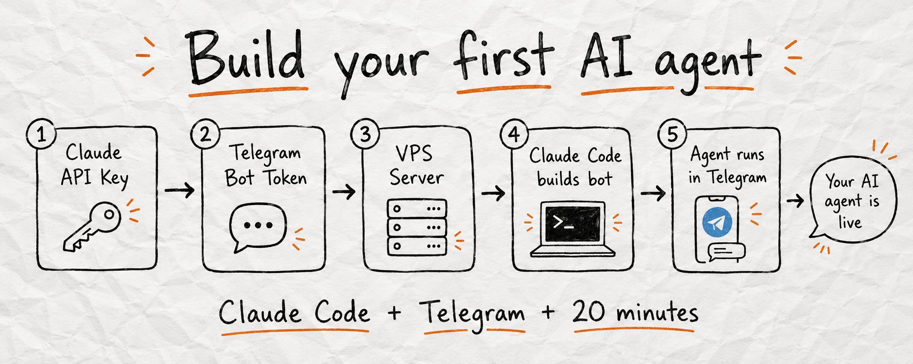
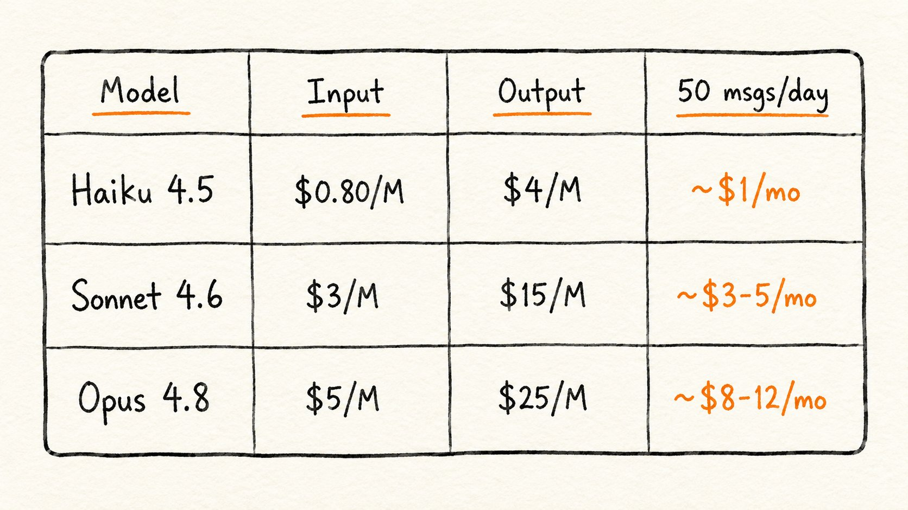

AI Agents
从概念到实操：十分钟搭一个属于你的 agent
Anatoli 那条 101K 浏览的 X 长文。Agents 不是一类东西，是一个 spectrum——本文把这道光谱讲清楚：什么算 agent、能建哪几类、怎么用 Claude Code 十分钟搭一个自己的 Telegram bot，再附 14 个 prompt 模板拿走就能用。

Anatoli Kopadze · AI Agents. What they are and how to Build Your Own Step by Step · 2026/06/08
现在人人都在说 AI agent。但你问大多数人 agent 到底是什么，得到的回答往往是模糊的——「能自主干活的 AI」。
真实情况比这有用得多。Agents 不是一类东西，是一个 spectrum。本文把 agent 这道光谱讲清楚：什么算 agent、能建哪几类、怎么用 Claude Code 十分钟搭一个自己的 Telegram bot，再附 14 个 prompt 模板拿走就能用。
本文按 7 个章节展开：先讲清楚 agent 和普通 chat 的本质区别（cap 01-02），再列 5 类你能马上建的 agent（cap 03），然后用 Claude Code + Telegram 真的搭一个出来（cap 04-05），最后给 5 个 skill + 4 招 memory（cap 06-07）。看完你能直接动手。
What makes something an agent
问 Claude「今天我应该发什么」——这不是 agent，这就是 chat。让 Claude「找出 AI 领域现在最热的三个话题，挑出最有传播潜力的那一个，按我的风格写一篇文案，存到文件里」——而且它自己就做完了，你没动一下——这才是 agent。
差异不在模型。差异在模型周围那层结构。一个 agent 拥有三件普通 chat 没有的东西：
- Tools —— 能自己调的工具：搜索、文件系统、代码执行、外部 API
- Memory —— 跨任务持续的 memory，不是只在一次 session 内有效
- Loop —— 一直跑到任务完成的 loop，不是只生成一次回答就停
这三件套加得越多，你介入得越少。这就是 agent 的核心思想。
The spectrum: from chat to agent
理解 agent 最快的方式是看 spectrum，从最弱的 chat 到最强的 fully autonomous agent，每上一层都加一点结构：
- L1 · CHAT 基础 chat：你问，Claude 答，session 结束。没有 tool、没有持续目标、不能操作世界。
- L2 · TOOLS 带 tool 的 Claude：当 Claude 回答前先搜了网页、读了附件、生成了图，它已经「轻度 agentic」了。是你没一步步告诉它要这么做——它自己决定需要的。
- L3 · WORKFLOW 多步 workflow：你给一个目标，Claude 拆步骤、执行每一步、检查结果、交付成品。步骤之间你不用介入。
- L4 · AUTONOMOUS 完全自主 agent：按 schedule 跑、监控输入、调外部服务、没人参与就完成复杂任务。你设一次目标，回来直接看输出。
底层和顶层的差异不是不同模型。是模型周围的东西——它能调什么 tool、它能记住什么、它能不能一直跑到任务完成。
5 types of agents you can build today
为了让 agent 看起来不抽象，下面列 5 类典型场景。这些不是上限——你按自己的需要建就行。每类都附一段 system prompt，复制到 Claude Code 就能直接生成对应 agent。
Research agent：在给定主题上收集信息、读多个来源、提取关键点、给结构化总结。你给问题，它给的答案等于你手动花几小时才能整理出来。
Writing agent：按你定义的系统写内容。给它你的语气、格式、受众、话题，它自己处理草稿、改写、编辑，不用你盯着每一句。
Code agent：写代码、跑代码、读报错、改错误、继续。你描述代码该做什么，agent 负责实现和 debug 的循环。
Business agent：处理重复业务任务——起草邮件、处理客户请求、筛选 lead、出报告。规则一定义，自动跑。
Personal agent：管日程、整理任务、准备 briefing、接手你每天手动做的规划工作。
Build your first agent
你会用 Claude Code 搭一个跑在远程 server 上的 Telegram bot，用 Claude 当大脑。Claude Code 负责写所有代码——你用普通英语描述想要什么就行。设好之后，所有跟 bot 的交流都直接走 Telegram。整个过程 10-20 分钟。你不需要会写代码。
需要的 3 样东西：
- Claude API key —— 从
console.anthropic.com拿。开发者 key，按用量付费，不是固定月费。个人 bot 每天 50 条消息的话，每月 $1-5，看选哪个模型 - Telegram bot token —— 找
@BotFather创建 - Linux VPS —— 个人 Telegram bot 不需要太强：1 CPU、1GB RAM、20GB 存储就够。DigitalOcean、Hetzner、Vultr 的基础款都行，每月 $4-6。server 拿到后跑
npm i -g @anthropic-ai/claude-code装 Claude Code
第一步：给 agent 一个 personality。打开 VPS 终端，启 Claude Code，粘下面这段 prompt 让它帮你建好：
第二步：部署成后台服务。bot 跑起来了，但你还想要它随 server 启动自动跑、崩了自动重启。粘：
第三步：加持久 memory。bot 重启后会丢对话历史，加这一段：
三步走完，bot 已经能用了。下一步是给它加 skill——见 cap 06。
Model and cost
bot 的大脑用哪个 Claude 模型合适？下面是三个常见选项的对比图：

三个模型怎么挑：
- Sonnet 4.6 —— 大多数个人 bot 的首选。日常任务够强，价格对日常使用也友好
- Haiku 4.5 —— 想极致压成本就用这个。能省一大截，但回答深度会下降
- Opus 4.8 —— 只有复杂的分析型 agent（比如真要做研究、写长文）才值得上这个。回答质量最强，单价也最高
个人 bot 每天 50 条消息的话，整月成本大概在 $1-5 这个区间——比一杯咖啡便宜，但 24 小时随时在。
5 skills to add to your bot
Skills 是你后续给 bot 加的能力。每加一个 skill 就是在 Claude Code 里跑一段新 prompt，Claude Code 写代码、装好。下面 5 个是最实用的起步组合。
Skill 1 · Web search。让 agent 能查实时信息，而不是只从 memory 答。
Skill 2 · Save notes。让 agent 能存你说的任何东西——灵感、任务、研究结论——以后调出来。
Skill 3 · Restrict to your account。默认任何找到 bot 的人都能用、都能花你的 API 额度。这一招锁成只你一个人能用。
Skill 4 · Track API costs。Claude API 按 token 收费。这一招给你装个计表，钱花哪了一目了然。
Skill 5 · Daily briefing。agent 每天早上主动发你一条消息，不用你问。
怎么改 agent 的 personality：打开主 bot 文件，找到顶部的 system prompt 变量，改完保存，跑 sudo systemctl restart your-bot-name。新 personality 立刻生效。
怎么加新 skill：在项目文件夹里开 Claude Code，描述你想要的：「Add X feature to the bot」。Claude Code 读现有代码、干净地加进去、告诉你需不需要重启。
The memory problem every agent has
这是最常遇到的问题：agent 在 session 之间丢 context、跨长任务丢 context、消息太多之后丢 context——开始出错或者重复已经做过的活。
三种典型场景：
- 长任务最终超过 Claude context 上限，agent 开始丢对话最开头：原始目标、已做的决策、你给的限制
- 关掉一个 session、开新的，agent 从零开始
- 任务中途被打断，agent 不知道停在哪
四种解法，对应四个 prompt 模板——存到你能随时调用的地方：
解法 1 · Checkpoint（检查点）。每完成重要一步，让 agent 写个简短 checkpoint。下个 session 开头粘过去。
解法 2 · Memory file（持久化笔记）。把每一步的成果按固定格式写到文件里，下个 session 直接读。
解法 3 · Context recovery（断点续传）。开新 session 第一件事，把上次的 memory note 粘进来，让 agent 立刻接上。
解法 4 · Rolling summary（滚动压缩）。对话太长时主动让 agent 压缩成 summary，从 summary 继续——线头不丢。
把四个 prompt 存到你的笔记里。每次长任务前调出来用，memory 墙就破了。
SOURCES & CREDITS
引用与原文出处
-
ORIGINAL ARTICLE
AI Agents. What they are and how to Build Your Own Step by Step.
作者：Anatoli Kopadze (@AnatoliKopadze) · 发布于 2026/06/08 · 101.3K 浏览
原文链接：https://x.com/AnatoliKopadze/status/2063985608381362576 - AUTHOR · X https://x.com/AnatoliKopadze
- AUTHOR · TELEGRAM CHANNEL https://t.me/kopadzemp — 每日 AI 内容
- INTERPRETATION 本文为解读版本，按中文阅读习惯重排。原文中所有 prompt 模板均保留英文原貌；中文版为意译，便于理解。如需引用请以原文为准。
这些 prompt 模板是 Anatoli 公开分享的，复制即用——但建议按你的具体场景调整。prompt 不是越通用越好用，而是越贴合你的处境越准。
You now know what agents are, what they can do, and how to build one yourself.
读完了。下一步：打开 Claude Code，粘 Prompt 1，十分钟后你有一个自己的 agent。